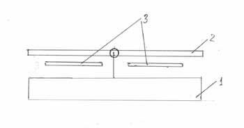
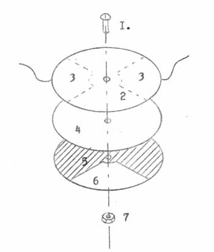
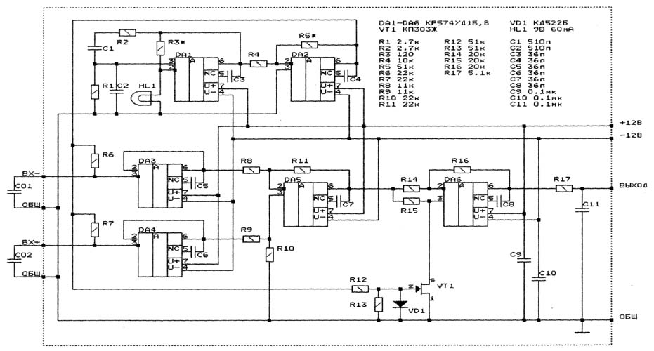

Дифференциальный емкостной датчик угловых и линейных перемещений
Дифференциальный емкостной датчик разрабатывался для измерения угла отклонения зеркала сканера (раздел "Omega-VIMS" проекта "Марс-94", "Марс-96" СКБ КП ИКИ РАН, г. Таруса), а также был применен в макете магнитного подшипника [1], электронном строительном уровнемере и как датчик угла поворота поворотной платформы. При соответствующей конструкции может быть использован для измерения линейных перемещений.
Введение
При разработке и отлаживании макетов устройств сканирования светового потока (оптосканеров) необходимо решать задачу определения угла поворота зеркала устройства. Величина угла поворота составляет, как правило, единицы градусов или даже доли градуса, причем определять ее в большинстве случаев нужно с точностью не хуже 1 ... 2 %. Дополнительным осложнением является необходимость проводить измерения в динамике, т. е. при движущемся зеркале. Частота сканирования при этом может доходить до нескольких десятков герц. Устройства типа механических или оптических микрометров обладают достаточной точностью, но не позволяют проводить измерения на движущемся объекте. Они могут использоваться только для калибровки. Также не подходят измерительные устройства на основе индуктивных датчиков угла поворота, так как не обладают достаточной стабильностью. Наиболее полно условиям проведения измерений удовлетворяют емкостные датчики угла поворота, но они обычно отличаются сложностью электронных схем. Разработанный емкостной датчик угла поворота имеет простую и надежную электронную схему при удовлетворении условий точности, стабильности и быстроты измерений. Кроме того, его первичный преобразователь (чувствительный элемент) не оказывает влияния на движение зеркала сканирующего устройства.
Принцип работы
В качестве чувствительного элемента емкостного датчика угла поворота используется дифференциальный конденсатор. Его конструкция может быть достаточно произвольной. Варианты представлены на рис. 1, 2. Емкость каждого из плеч может быть небольшой - порядка десяти пикофарад, но необходимо, чтобы относительное изменение емкостей было как можно большим.

Рис. 1. Конструкция чувствительного элемента емкостного датчика угла отклонения зеркала сканера: 1 - основание сканера, 2 - зеркало сканера на торсионе (соединено с общим проводом), 3 - пластины дифференциального конденсатора (изолированы от основания и зеркала).

Рис. 2. Конструкция чувствительного элемента емкостного датчика угла поворота: 1 - крепежный винт, 2 - статор (стеклотекстолит), 3 - обкладки статора (медная фольга), 4 - изолирующая прокладка (полиэтиленовая пленка толщиной 0.1 мм), 5 - обкладки ротора, соединенные перемычкой (медная фольга), 6 - ротор (стеклотекстолит), 7 - гайка.
Конструкция электронной части
Электронный преобразователь сигнала емкостного датчика угла поворота выполнен по схеме рис. 3 [4]. На микросхеме DA1 (КР574УД1) собран задающий синусоидальный RC-генератор с мостом Вина-Робинсона. Частота генератора, примерно равная 100 кГц, определяется элементами R1C1R2C2 (R1=R2, C1=C2). Стабилизация амплитуды колебаний осуществляется с помощью нелинейного элемента - лампы накаливания HL1 в цепи отрицательной обратной связи операционного усилителя DA1. На микросхеме DA2 (КР574УД1) собран усилитель, увеличивающий амплитуду колебаний до максимально возможной (около 10 В). Напряжение с выхода усилителя через резисторы R6, R7 подается на дифференциальный конденсатор C01, C02. Цепь R6R7C01C02 является, в сущности, резистивно-емкостным мостом, в одну из диагоналей которого включен источник переменного напряжения, а в другую - дифференциальный усилитель с фазовым детектором. Микросхемы DA3, DA4 (КР574УД1) включены по схеме буферных каскадов и служат для повышения входного сопротивления усилителя. Микросхема DA5 (КР574УД1) выполняет функцию дифференциального усилителя с коэффициентом усиления, равным двум. Операционный усилитель DA6 (КР574УД1) используется в качестве фазового детектора. Управление им осуществляется через ключ VT1. На выходе фазового детектора включен фильтр нижних частот R17C11 с частотой среза около 300 Гц. Как видно из принципиальной схемы, одна из пластин каждого плеча дифференциального конденсатора соединяется с общим проводом. Так как зеркало сканирующего устройства также, как правило, имеет контакт с общим проводом (через торсион), то оно может использоваться в качестве общей пластины дифференциального конденсатора. Это позволяет отказаться от гибких токоподводов, что является дополнительным преимуществом данного датчика.

Рис. 3. Схема принципиальная электронного преобразователя сигнала емкостного датчика угла поворота.
Ссылки:
24.09.2003
28.03.2008
08.03.2010
Альтернативные источники
энергии
Компьютеры и
Интернет
Магнитные поля
Механотронные системы
Перспективные
разработки
Электроника и технология